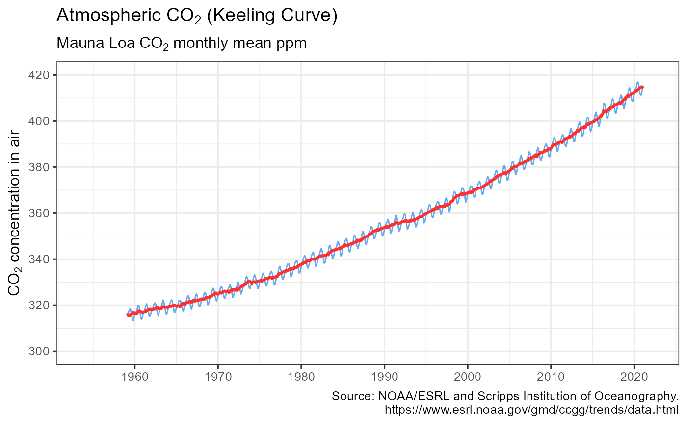

Retrieves atmospheric carbon dioxide measurements from National Oceanic and Atmospheric Administration Earth System Research Laboratories monitoring laboratory in Mauna Loa, Hawaii. https://www.esrl.noaa.gov/gmd/ccgg/trends/data.html
get_carbon(use_cache = TRUE, write_cache = getOption("hs_write_cache"))
| use_cache | (boolean) Return cached data if available, defaults to TRUE. Use FALSE to fetch updated data. |
|---|---|
| write_cache | (boolean) Write data to cache, defaults to FALSE. Use TRUE to write data to cache for later use. Can also be set using options(hs_write_cache=TRUE) |
Invisibly returns a tibble with the monthly carbon dioxide series
get_carbon invisibly returns a tibble with NOAA's monthly average carbon dioxide measurement.
The returned object includes date, year, month, average, trend, std dev, and uncertainty columns.
Trend is NOAA's published trend. Please refer to above website for details.
Dr. Pieter Tans, NOAA/GML https://www.esrl.noaa.gov/gmd/ccgg/trends/ and Dr. Ralph Keeling, Scripps Institution of Oceanography https://scrippsco2.ucsd.edu/.
C.D. Keeling, R.B. Bacastow, A.E. Bainbridge, C.A. Ekdahl, P.R. Guenther, and L.S. Waterman, (1976), Atmospheric carbon dioxide variations at Mauna Loa Observatory, Hawaii, Tellus, vol. 28, 538-551
Hernando Cortina, hch@alum.mit.edu
# \donttest{ # Fetch from cache if available: maunaloa <- get_carbon() # # Force cache refresh: maunaloa <- get_carbon(use_cache=FALSE) # # Review cache contents and last update dates: hockeystick_cache_details()#> <hockeystick cached files> #> directory: C:\Users\hch\AppData\Local/hockeystick/hockeystick/Cache #> #> file: C:\Users\hch\AppData\Local/hockeystick/hockeystick/Cache/gisstemp.rds #> size: 5.3 kB #> date: 2021-03-11 17:12:11 #> #> file: C:\Users\hch\AppData\Local/hockeystick/hockeystick/Cache/hurricanes.rds #> size: 1.6 kB #> date: 2021-03-11 17:12:20 #> #> file: C:\Users\hch\AppData\Local/hockeystick/hockeystick/Cache/icecurves.rds #> size: 1.6 kB #> date: 2021-03-11 17:12:19 #> #> file: C:\Users\hch\AppData\Local/hockeystick/hockeystick/Cache/maunaloa.rds #> size: 9.5 kB #> date: 2021-03-11 17:12:11 #> #> file: C:\Users\hch\AppData\Local/hockeystick/hockeystick/Cache/paleo.rds #> size: 20.2 kB #> date: 2021-03-11 19:43:44 #> #> file: C:\Users\hch\AppData\Local/hockeystick/hockeystick/Cache/seaice.rds #> size: 0.5 kB #> date: 2021-03-11 17:12:12 #> #> file: C:\Users\hch\AppData\Local/hockeystick/hockeystick/Cache/sealevel.rds #> size: 15.8 kB #> date: 2021-03-11 17:12:13 #> #> file: C:\Users\hch\AppData\Local/hockeystick/hockeystick/Cache/temp2k.rds #> size: 21.8 kB #> date: 2021-03-11 17:12:20 #>